Interest creates connection.
Shared interests give strangers a natural reason to engage.
Project 02 · UI/UX Design · Website
Turning race-day participation into real-world connection.
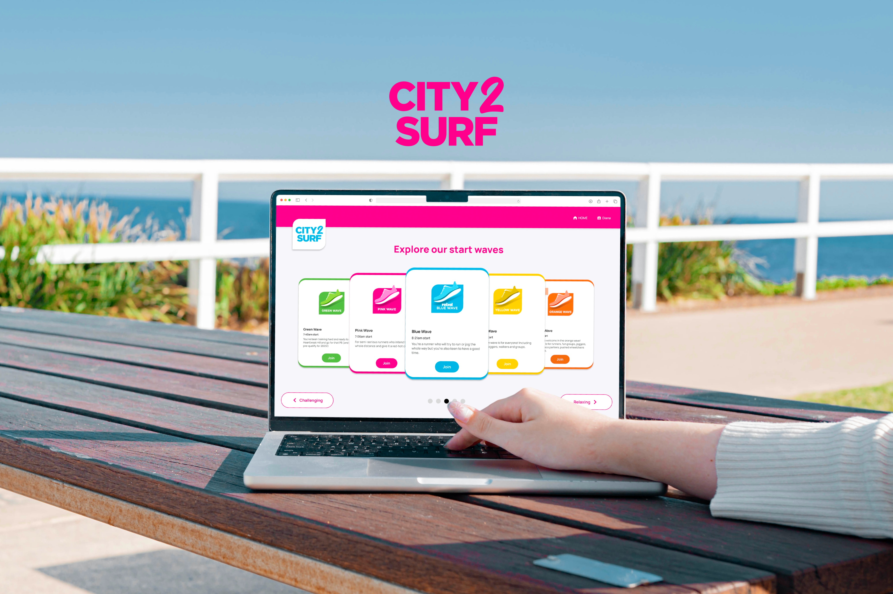
01 — Overview
Overview
City2Surf brings thousands of people together around a shared experience, but participation can still feel largely individual.
I explored how a digital experience could help runners choose the right starting wave, discover relevant communities, and connect with people who share similar interests before race day.
02 — The Challenge
Problem
City2Surf thrives on community and shared experiences, yet meaningful connection is difficult to create at the scale of a major public event.
The opportunity was to transform the existing event structure into something that could help participants discover and engage with one another.
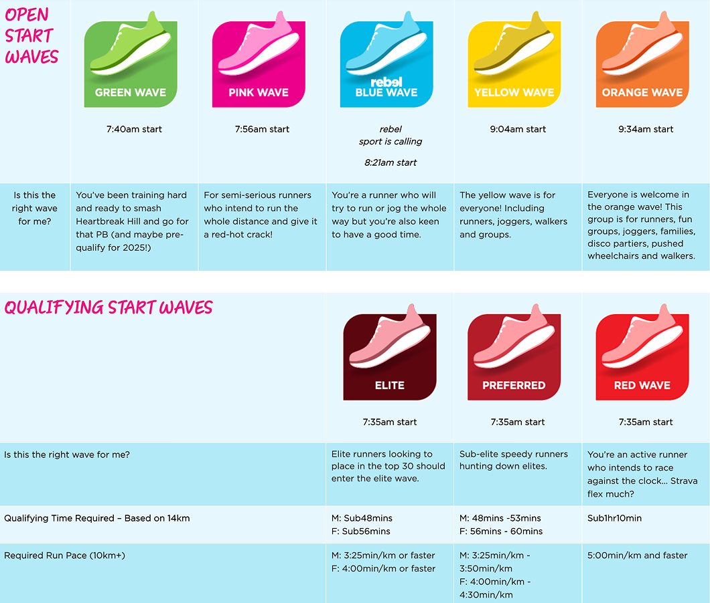
Screenshot the existing City2Surf Start Waves reference from City2Surf 1.0, page 2.
03 — Finding the Opportunity
Research
I reviewed Meetup, Eventbrite, Niantic Campfire and Nextdoor to understand how people discover groups, identify shared interests and decide to participate.
This led me to use City2Surf's existing starting-wave structure as the first layer of a social system.
Shared interests give strangers a natural reason to engage.
Users need to understand what a group offers before being asked to commit.
Connection is stronger when grounded in a shared activity, place or identity.
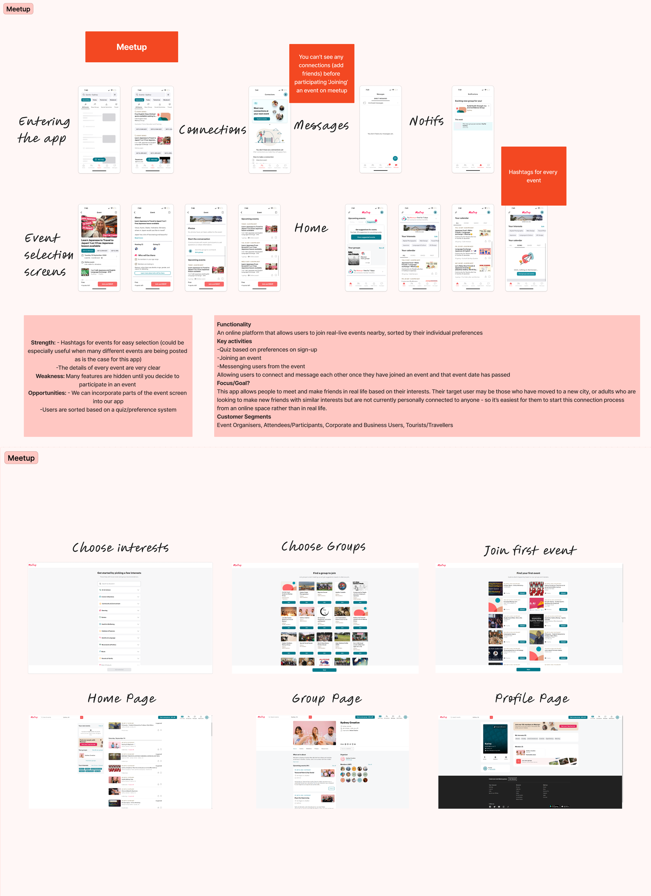
City2Surf 1.0, page 2 — Meetup research board.
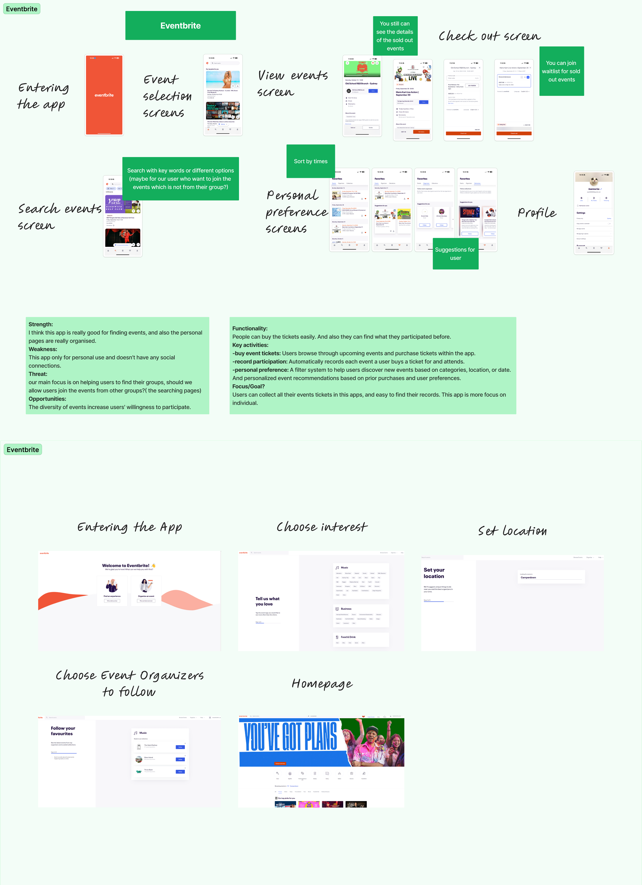
City2Surf 1.0, page 2 — Eventbrite research board.
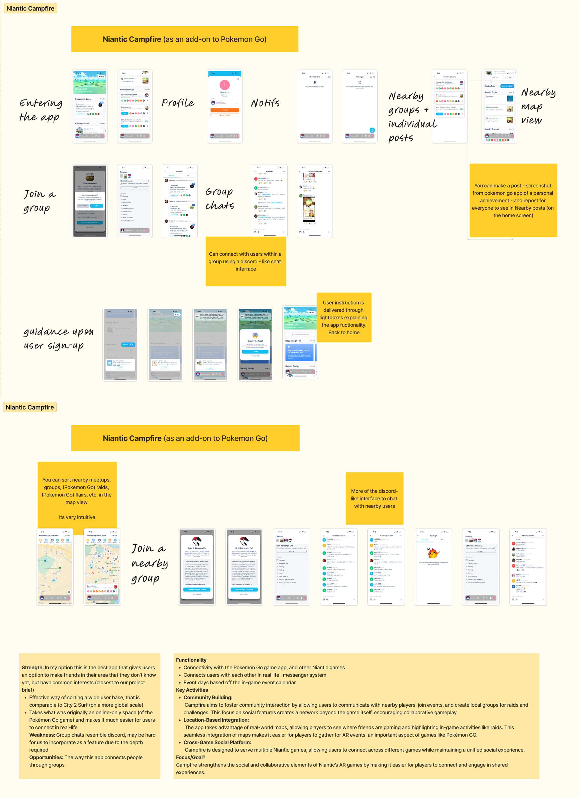
City2Surf 1.0, page 2 — Niantic Campfire research board.
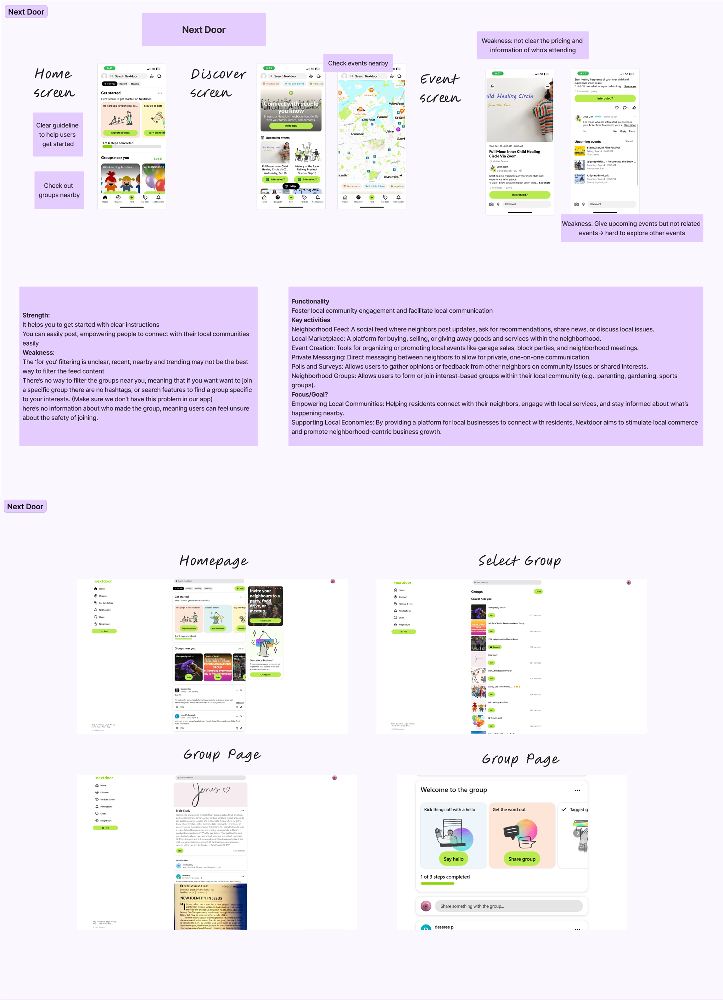
City2Surf 1.0, page 3 — Nextdoor research board.
04 — Experience Strategy
Step 01
An initial identity based on pace and event preference.
Step 02
Personal interests add another layer of relevance.
Step 03
Smaller communities create space for meaningful interaction.
05 — Designing the Experience
01 / Find your wave
I designed two paths: Get my match for users who want guidance and Explore all waves for users who already know what they want.
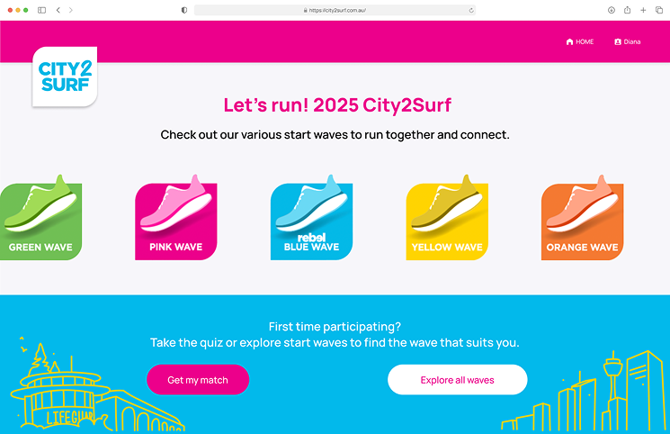
Iteration 4 final Start Waves landing page.
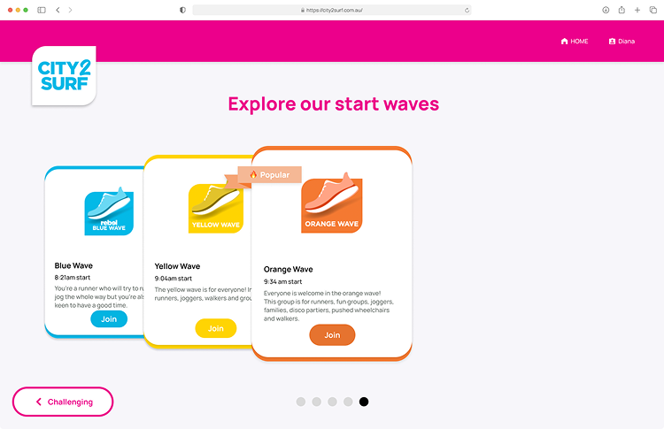
Iteration 4 final Explore Start Waves screen.
02 / Belong
Confirmation feedback and wave-specific colour create a clearer transition from selection into a distinct community experience.
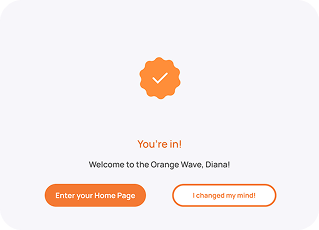
Final join confirmation state.
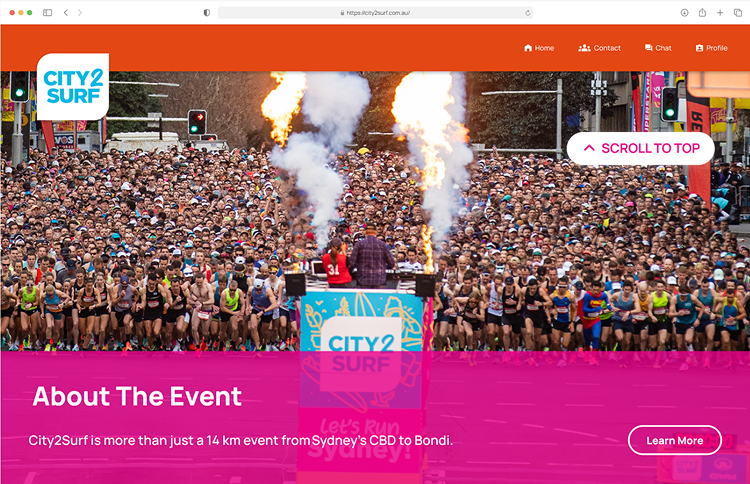
Final Orange Wave homepage.
03 / Find your people
Interest tags and recommended groups help runners discover people beyond pace alone.
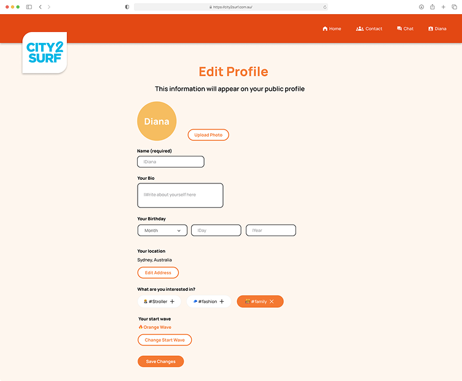
Use the final Edit Profile screen where interest tags are visible.
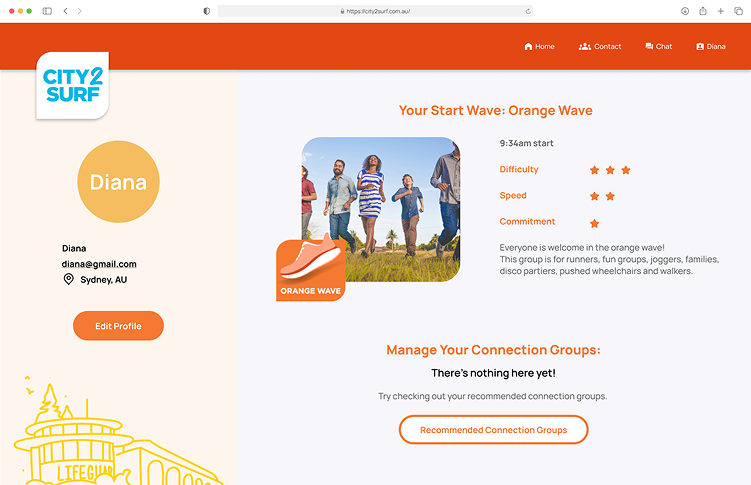
Final profile screen.
04 / Stay in control
Confirmation and save states make the consequences of changing a wave visible before destructive changes are applied.
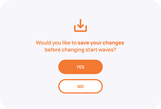
Final save changes popup.
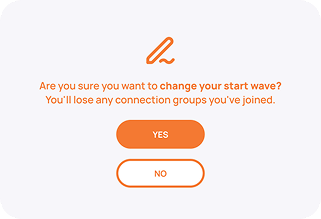
Final warning popup before changing start wave.
06 — Testing & Refinement
Evaluation
I used heuristic evaluation and design feedback to identify moments where the interface created uncertainty.
Later iterations focused on clearer feedback, more predictable navigation and safer state changes.
Before: The looping animation made the next step unclear.
After: Timing and next-step actions were clarified.
Before: Navigation behaved inconsistently before wave selection.
After: Dedicated no-wave homepage and profile states were designed.
Before: Changing a wave could affect joined groups without enough warning.
After: Save prompts and explicit confirmation were added.
Reuse the final confirmation state for the refined feedback example.
Reuse the final profile screen for navigation clarity.
Reuse the final warning state for destructive-action clarity.
07 — Final Experience
Prototype
The final prototype brings the full experience together — from discovering a starting wave to joining a community and managing the experience with confidence.
08 — Reflection
Reflection
This project showed me that meaningful social experiences do not come from simply adding more social features. They often begin by reducing uncertainty: helping people understand where they belong, what happens next and how much control they have.
If I continued the project, I would validate the connection-group recommendation system with real City2Surf participants and explore how digital relationships could transition into race-day meetups.
Next project